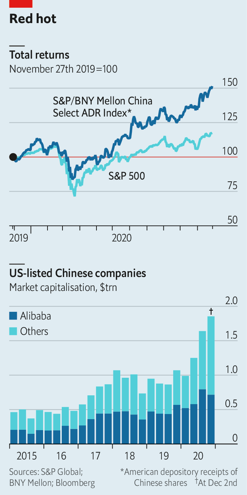
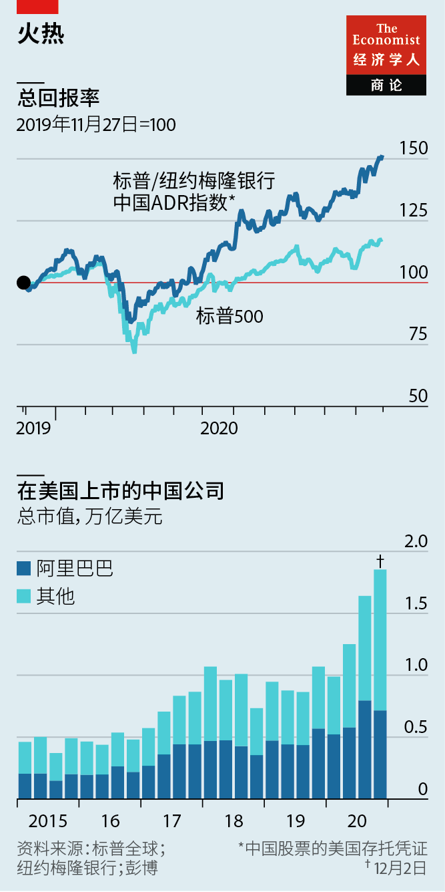

2020-12-15T08:13:29+00:00
Exchange-traded fiends
交易所交易恶魔
交易所交易惡魔
Boiling point
沸点
沸點
US Congress v China Inc
美国国会对战中国公司
美國國會對戰中國公司
FOR 18 YEARS American regulators have implored Beijing to let them inspect the China-based auditors of Chinese companies listed on America’s stock exchanges. Dream on, China’s Communist regime responded, citing sovereignty and national security. On December 2nd Congress had had enough. The House of Representatives passed a bill that would boot offending firms off American bourses if their auditors fail to comply with regulators’ information requests for three years running. Since it had earlier sailed through the Senate by 100 votes to nil, it can expect a presidential signature.
十八年来，美国监管部门一直恳请北京允许它们审查在美国证券交易所上市的中国公司的中国审计机构。中国的共产党政权以主权和国家安全为由回应说，做梦去吧。12月2日，美国国会终于受够了。众议院通过了一项法案，规定如果公司的审计机构连续三年不遵守美国监管部门的信息要求，将被强制从美国退市。由于该法案之前以100票对零票在参议院顺利通过，它预期将获总统签署生效。
十八年來，美國監管部門一直懇請北京允許它們審查在美國證券交易所上市的中國公司的中國審計機構。中國的共產黨政權以主權和國家安全為由回應說，做夢去吧。12月2日，美國國會終於受夠了。眾議院通過了一項法案，規定如果公司的審計機構連續三年不遵守美國監管部門的信息要求，將被強制從美國退市。由於該法案之前以100票對零票在參議院順利通過，它預期將獲總統簽署生效。
This would put Chinese businesses worth a combined $2trn at eventual risk of expulsion, including Alibaba, a New York-listed internet titan (see chart). It would make it harder for Americans to get exposure to China through American exchanges. Those hungry for juicy Chinese stocks might end up buying them abroad instead, through channels over which Washington exerts no control.
这将使总市值达两万亿美元的中国企业面临最终被驱逐的风险，其中包括在纽约上市的互联网巨头阿里巴巴（见图表）。美国人将更加难以通过美国交易所投资中国市场。那些渴望获得诱人的中国股票的人最终可能会通过不受华盛顿控制的渠道，从海外购买这些股票。
這將使總市值達兩萬億美元的中國企業面臨最終被驅逐的風險，其中包括在紐約上市的互聯網巨頭阿里巴巴（見圖表）。美國人將更加難以通過美國交易所投資中國市場。那些渴望獲得誘人的中國股票的人最終可能會通過不受華盛頓控制的渠道，從海外購買這些股票。